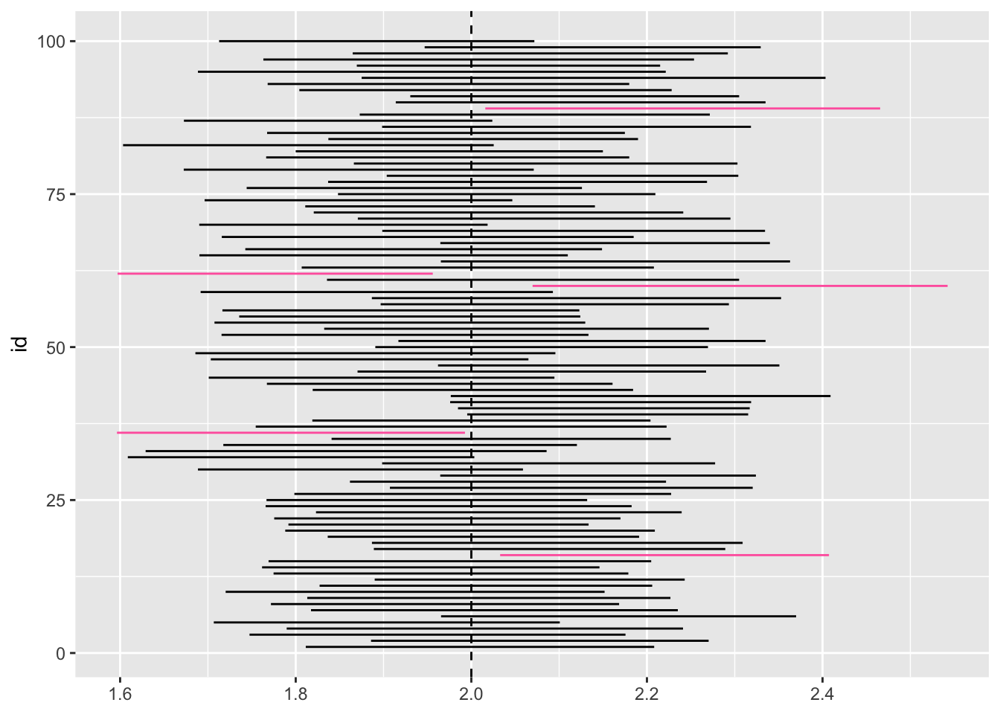

In Linear Modeling, we begin by discussing Matrix Rules and Properties and learning about Excepted Values and Covariances, and Variances, all of which are Random Matrices.
Expectation describes the average value
\[E[X] = \begin{cases} \sum_x xp_X(x) & X \textrm{ is a discrete random variable}\\ \int_{-\infty}^{\infty}xf_X(x)dx & X \textrm{ is a continuous random variable} \end{cases}\]
Covariance is a measure of joint variability between two random variables
\[cov(\mathbf{X},\mathbf{Y}) = E[(\mathbf{X} - E[\mathbf{X}])(\mathbf{Y} - E[\mathbf{Y}])]\]
Variance measures the spread of a variable
\[var(\mathbf{X}) = cov(\mathbf{X}, \mathbf{X}) = E[\mathbf{X}^2] - E[\mathbf{X}]^2\]
\[\mathbf{y} = \mathbf{X} \beta + \epsilon\]
The purpose of the least squares estimation is to estimate the relationship between various predictor variables \(X\) and an outcome variable \(Y\). In using this relationship, we must understand the Law of Total Exception and Law of Total Variance rules.
As a result, we can take the expected value of \(\hat \beta\), in which we want to show:
\[\mathbf{E[\hat{\beta}]=\beta}\]
In order to prove the above equation, we must use the Law of Total Exception and various Matrix rules. We can also take the variance of \(\hat \beta\):
\[\rm{var}{(\mathbf{\hat \beta})} = \hat \sigma ^2 (\mathbf{X^TX})^{-1}\]
In order to get the variance of \(\hat \beta\), we have to calculate the variance/ covariance matrix using the properties of random matrices and the Law of Total Variance.
The overall idea of the Law of Total Exception and the Law of Total Variance rules allow us to calculate the Expected Value and Variance or our main estimator \(\mathbf{\hat \beta}\) from the Least Squares Estimator.
Next, we learn what it means to be biased. In the following, we show how to prove that \(\hat \beta\) is an unbiased estimator.
\[ \begin{align} \rm{if} \quad \mathbf{E[\hat \beta - \beta]} &= 0 \\ \\ \rm{then} \quad \large\mathbf{\hat\beta} &\, \small\textrm{ is an unbiased estimator} \end{align} \]
Hence, the above proves \(\hat \beta\) is an unbiased estimator for the parameter \(\beta\).
Following this logic, it’s also important to discuss what it means to get the minimal variance. In doing so, we reuse the \(\mathrm{var}\mathbf{(\hat \beta)}\) formula to establish the following inequality that defines what it means to be \({\color{Blue}{\texttt BLUE}}\).
\({\color{Blue}{\texttt BLUE}}\) is the best linear unbiased estimator. We know the Least Squares Estimation returns the best linear unbiased estimator \(\mathbf{\hat \beta}\), but how can we prove this?
\[\large \textrm{var}(\color{Blue}{\hat\beta}) = \color{Teal}{\hat\sigma^2} (\mathbf{X}^T\mathbf{X})^{-1}\leq \textrm{var}(\color{HotPink}{\tilde\beta})\]
We want to prove what it means to be the best linear unbiased estimator. Hence, we want to show that \(\hat \beta\) is better than some other parameter \(\tilde \beta\) using the following inequality:
\[\mathrm{var}(\hat\beta)=\hat \sigma^2(X^TX)^{-1} \le{\mathrm{var}(\bar \beta)}\]
To solve this inequality, we need to use our information that we learned about bias to show that \(\tilde\beta\) is unbiased:
\[\bf E[\bar\beta - \beta]=0\]
Next, in order to compare our \(\hat\beta\) obtained from the least squares estimation to an unbiased linear estimator \(\tilde\beta\), we must show the variance of \(\tilde\beta\) using our Variance/Covariance rules. As a result, we can show that our \(\hat \beta\) variance is smaller or equal to the variance of \(\bar \beta\) for all cases.
Next, we learned about the Residual Sum of Squares(RSS), which is the sum of the residuals squared.
\[\mathbf{RSS}=\sum{e^2}\]
We use the Matrix Rules to be able to get various pieces of the RSS. For example, we showed the excepted value of the RSS:
\[E[e^Te]=\sigma^2(n-(p+1))\]
We got this using the Trace and idempotent rules.
\[E[e^Te]=E\mathbf{[y^T(I-H)y]}\]
When taking the expected value of the RSS, we used an expected value rule we already know about \(\mathbf{[y^T(I-H)y]}\). We also used that idempotent rule to reduce the \(I-H\) term. The purpose of finding the residual sum of squares and its expected value is to get a good estimate for \(\hat \sigma^2\):
\[\hat \sigma^2 = \frac{RSS}{(n-(p+1))}\]
To derive this, we needed the fact that \(\mathbf{I-H}\) is idempotent and we needed that rule where we can take when we need to know that taking the expected value of matrices of a particular form such as always thats that particular form that involves the trace. We then talk about what the trace is and how we can estimate it for the hat matrix as well for the identity matrix, which is how we got the \(\mathbf{(n-(p+1))}\) piece. The \(\hat \sigma^2\) value is an important piece for calculating the variance and covariance and variance/covariance matrix for the variance of \(\hat \beta\):
\[\mathrm{var}(\hat \beta)=\hat \sigma^2(X^TX)^{-1}\]
When comparing different models, it’s often that we want to compare a small model to a larger one. We can now compare the RSS of the two models! In linear regression, the goal is to minimize the \(\mathbf{RSS}\) and establish a model of fewest explanatory variables \(\mathbf{X_i}\). So if \(RSS_{small}-RSS_{larger}\) is small, then the fit of the small model is almost as good as the larger one.
\[ \begin{align} \mathbf{H_0}&: \beta_1 = \beta_2 = {\ldots} = \beta_p = 0 \\ \mathbf{H_A}&: \small\text{the models are not equal} \end{align} \]
Let’s create an F-Statistic so we can compare to the F-distribtion!
\[F = \frac{RSS_{small} - RSS_{larger} / (df_{small}- df_{larger})}{RSS_{larger}/df_{larger}}\sim F_{df_{small}- df_{larger}, df_{larger}}\]
When comparing two linear regression models, we use the F-test as a way to compare a small model to a large model. A big part of the F test is the residuals sum of squares. So it’s important to know how to get the RSS and its expected value. Based on the hypothesis testing, we can determine whether or not to fail to reject the null hypothesis (two models are the same) or reject our null hypothesis (two models are different).
F tests are important because they let us do hypothesis testing. The F-test gives us a way to systematically compare a small model to a large model. The hypothesis test gives us a way to see if the two models are equal, i.e. if the small model is just as good as the large model. The F test is a built framework that uses the f-distribution, which can be used to find a good cut off for our hypothesis test to determine whether we can reject our null hypothesis that the models are the same.
If we’re only given the value of estimate \(\mathbf{\hat \sigma ^2}\), how can we get the \(\mathbf{RSS}\)?
This example illustrates why we need an estimate of \(\hat \sigma^2\) because, if we didn’t know \(\mathit{RSS}\), we do know that our estimate \(\hat \sigma^2 =\frac{\mathbf{RSS}}{(n-(p+1))}\), which we can then get \(\mathit{RSS}\) by estimating \(E[e^Te]=\mathbf{\sigma^2}(n-(p+1))\).
Definition. If we use the same sampling method to select different samples and computed an interval estimate for each sample, we would expect the true population parameter (\(\beta_1\)) to fall within the interval estimates 95% of the time.
\[\Large\hat\beta\pm t^*SE_{\hat\beta}\]
Confidence intervals are a way to quantify our uncertainty. The confidence interval takes the \(\hat \beta\) from our least squares estimation \(\pm\) \(t^*\), which comes from our t-distribution, multiplied by the standard error of \(\hat \beta\) \(\mathbf{SE_{\hat \beta}}\).
\[\hat\beta\pm t^*SE_{\hat\beta}\]
Suppose we select a different sample of size \(\mathcal{n}\) from the same population and compute \(\mathcal{n}\) new interval estimates. Each one of those \(\mathcal{n}\) interval estimates would be different. We would expect that 95% of those \(\mathcal{n}\) would contain the true population parameter for that \(\beta\) coefficient.
Run a simulation to generate 100 confidence intervals by sampling from a “true” population
In the following example, we are interested in illustrating the relationship between Age and Wage.
\[\text{Wage} ={\bf \beta_1}\times\text{Age} + \epsilon\\\] \[\small{\mathbf{\beta_1}\Rightarrow\small{\text{true parameter for the relationship between Age and Wage}}}\]
\[ \begin{align} \Rightarrow \,& \text{Age} \approx \text{Normal} (30,10) \\ \Rightarrow \,& \epsilon \approx \text{Normal}(0,10) \\ \Rightarrow \,& \text{Sample } \texttt{n}=100 \end{align} \]
From the above equation, suppose \(\beta_1=2\),
\[\mathrm{Wage} = \mathbf{2}\times\mathrm{Age} + \epsilon\] \[\small{\Rightarrow \beta_1} = \mathbf{2}\]
In the following, we generate a sample of 100 people (n). The set.seed() function makes it so that the method produces the same answer, and the rnorm function pulls a random normal variable.
Sample 1:
set.seed(7)
n <- 100 ## sample 100 people
sample <- data.frame(
Age = rnorm(n, mean = 30, sd = 10)
)
sample$Wage <- 2 * sample$Age + rnorm(n, mean = 0, sd = 10)
head(sample)## Age Wage
## 1 52.87247 110.93553
## 2 18.03228 41.93996
## 3 23.05707 45.32082
## 4 25.87707 40.01053
## 5 20.29327 43.67375
## 6 20.52720 25.01562Sample 2:
n <- 100
sample2 <- data.frame(
Age = rnorm(n, mean = 30, sd = 10)
)
sample2$Wage <- 2 * sample2$Age + rnorm(n, 0, 10)
head(sample2)## Age Wage
## 1 50.23344 105.71950
## 2 38.62492 74.49258
## 3 29.75091 60.04891
## 4 36.00635 68.13020
## 5 42.16481 80.15938
## 6 18.23468 24.82762In the following, we use the lm function to fit two linear models using the two different samples we generated above. Next, we use the confint function to compute the confidence intervals of one or more parameters for each of the fitted models.
Fit linear models:
Model <- lm(Wage ~ Age, data = sample) ## Sample 1
Model2 <- lm(Wage ~ Age, data = sample2) ## Sample 2Compute the confidence intervals:
confint(Model)## 2.5 % 97.5 %
## (Intercept) -5.513397 7.503540
## Age 1.811456 2.208256
\[\texttt{95% CI}: (1.81, 2.21)\] Our true parameter is \(\mathbf{2}\), which is a fixed number that falls within this above confidence interval estimate. Hence, sample 1 accurately captures an interval that contains the true parameter \(\mathbf{2}\).
confint(Model2)## 2.5 % 97.5 %
## (Intercept) -8.880926 3.241064
## Age 1.885782 2.270270
\[\texttt{95% CI}: (1.89, 2.27)\] Our true parameter is \(\mathbf{2}\), which is a fixed number that falls within this above confidence interval estimate. Hence, sample 2 accurately captures an interval that contains the true parameter \(\mathbf{2}\).
In the following, we create the get_ci function to generate a random sample, fit a model predicting the relationship between Wage and Age, and return the confidence interval for the model. We then use the purrr package to run this simulation to generate 100 confidence intervals by sampling from a “true” population.
get_ci <- function(id) {
sample <- data.frame(
Age = rnorm(n, mean = 30, sd = 10)
)
sample$Wage <- 2* sample$Age + rnorm(n, 0, 10)
model <- lm(Wage ~ Age, data = sample)
return(
data.frame(
lb = confint(model)[2,1],
ub = confint(model)[2,2],
id = id
))}
## map function call 100 times
set.seed(7)
ci <- map_df(1:100, get_ci)
ci## lb ub id
## 1 1.811456 2.208256 1
## 2 1.885782 2.270270 2
## 3 1.747393 2.175578 3
## 4 1.789730 2.241068 4
## 5 1.706706 2.100767 5
## 6 1.965539 2.369903 6
## 7 1.817412 2.235196 7
## 8 1.771773 2.168298 8
## 9 1.813153 2.226753 9
## 10 1.720200 2.151774 10
## 11 1.827199 2.205988 11
## 12 1.889959 2.243009 12
## 13 1.774781 2.178826 13
## 14 1.761686 2.145957 14
## 15 1.769087 2.204843 15
## 16 2.032832 2.407325 16
## 17 1.888968 2.289237 17
## 18 1.886819 2.308981 18
## 19 1.836450 2.191071 19
## 20 1.788087 2.208988 20
## 21 1.791706 2.133542 21
## 22 1.775516 2.169829 22
## 23 1.823105 2.239549 23
## 24 1.765727 2.182540 24
## 25 1.766709 2.131931 25
## 26 1.798480 2.227568 26
## 27 1.907268 2.320464 27
## 28 1.861781 2.221742 28
## 29 1.964606 2.324063 29
## 30 1.688661 2.058808 30
## 31 1.898434 2.277649 31
## 32 1.608771 2.003401 32
## 33 1.629066 2.085719 33
## 34 1.717546 2.120257 34
## 35 1.840852 2.227178 35
## 36 1.596425 1.992751 36
## 37 1.754447 2.222357 37
## 38 1.818929 2.204050 38
## 39 1.995319 2.315291 39
## 40 1.984829 2.317043 40
## 41 1.975906 2.318633 41
## 42 1.976608 2.409119 42
## 43 1.819331 2.184243 43
## 44 1.767180 2.160836 44
## 45 1.700951 2.094633 45
## 46 1.870416 2.267377 46
## 47 1.962067 2.350831 47
## 48 1.703288 2.065038 48
## 49 1.685743 2.095736 49
## 50 1.890660 2.269517 50
## 51 1.916953 2.335098 51
## 52 1.715522 2.133406 52
## 53 1.832427 2.270592 53
## 54 1.707494 2.129758 54
## 55 1.735660 2.124085 55
## 56 1.716514 2.123040 56
## 57 1.896716 2.293324 57
## 58 1.886719 2.352785 58
## 59 1.691695 2.092893 59
## 60 2.069776 2.542423 60
## 61 1.835610 2.304990 61
## 62 1.597149 1.956100 62
## 63 1.806818 2.207908 63
## 64 1.965324 2.362996 64
## 65 1.690336 2.109878 65
## 66 1.742592 2.148844 66
## 67 1.964708 2.340041 67
## 68 1.715803 2.184893 68
## 69 1.898585 2.334491 69
## 70 1.690144 2.018530 70
## 71 1.870736 2.295082 71
## 72 1.820545 2.241361 72
## 73 1.810885 2.140753 73
## 74 1.696239 2.046693 74
## 75 1.848146 2.209632 75
## 76 1.744134 2.125966 76
## 77 1.836901 2.268414 77
## 78 1.903663 2.304057 78
## 79 1.672467 2.071097 79
## 80 1.866229 2.303107 80
## 81 1.766351 2.179824 81
## 82 1.799946 2.149847 82
## 83 1.603352 2.025507 83
## 84 1.837171 2.189856 84
## 85 1.767415 2.174879 85
## 86 1.898412 2.318471 86
## 87 1.672686 2.023891 87
## 88 1.872905 2.271626 88
## 89 2.015941 2.465607 89
## 90 1.913949 2.335074 90
## 91 1.930481 2.304991 91
## 92 1.804119 2.228152 92
## 93 1.768044 2.179842 93
## 94 1.875094 2.403415 94
## 95 1.688662 2.221422 95
## 96 1.869576 2.215035 96
## 97 1.763146 2.253624 97
## 98 1.864914 2.292133 98
## 99 1.946845 2.329600 99
## 100 1.712754 2.071801 100
In the following code, we use the ggplot function to plot 100 simulated intervals from above.
ggplot(ci, aes(y = id, color = (lb > 2 | ub < 2))) +
geom_linerange(aes(xmin = lb, xmax = ub)) +
geom_vline(xintercept = 2, lty=2) +
scale_color_manual(values = c("black", "#ff66ad")) +
theme(legend.position = "none")
What percent of the intervals contain the true parameter \(\mathbf{2}\)?
\[\frac{95 \small\text{ intervals}}{100\small\text{ intervals}}=95\texttt{%}\]
In the above exercise, we’re selecting 100 different samples and computing each of their interval estimates in order to get an approximation as close to the true population parameter. The figure we created above plots 100 simulated intervals represented by horizontal lines where the black lines represent the intervals that contain the true parameter \(\mathbf{2}\) and the red lines represent the intervals that do not contain the true parameter. From the figure, we can calculate the percent of the intervals that contain the true parameter \(\mathbf{2}\) by dividing all of the black lines by the total number of lines: \(\frac{95}{100}=95\texttt{%}\).
library(knitr)
knitr::opts_chunk$set(echo = TRUE, eval = TRUE)
library(purrr)
library(ggplot2)
set.seed(7)
n <- 100 ## sample 100 people
sample <- data.frame(
Age = rnorm(n, mean = 30, sd = 10)
)
sample$Wage <- 2 * sample$Age + rnorm(n, mean = 0, sd = 10)
head(sample)
n <- 100
sample2 <- data.frame(
Age = rnorm(n, mean = 30, sd = 10)
)
sample2$Wage <- 2 * sample2$Age + rnorm(n, 0, 10)
head(sample2)
Model <- lm(Wage ~ Age, data = sample) ## Sample 1
Model2 <- lm(Wage ~ Age, data = sample2) ## Sample 2
confint(Model)
confint(Model2)
get_ci <- function(id) {
sample <- data.frame(
Age = rnorm(n, mean = 30, sd = 10)
)
sample$Wage <- 2* sample$Age + rnorm(n, 0, 10)
model <- lm(Wage ~ Age, data = sample)
return(
data.frame(
lb = confint(model)[2,1],
ub = confint(model)[2,2],
id = id
))}
## map function call 100 times
set.seed(7)
ci <- map_df(1:100, get_ci)
ci
ggplot(ci, aes(y = id, color = (lb > 2 | ub < 2))) +
geom_linerange(aes(xmin = lb, xmax = ub)) +
geom_vline(xintercept = 2, lty=2) +
scale_color_manual(values = c("black", "#ff66ad")) +
theme(legend.position = "none")[1] Dalpiaz, D. (2016). Applied Statistics with R. STAT 420 at UIUC.
[2] Faraway, J. J. (2004). Linear Models with R. Chapman and Hall/CRC.
[3] James, G., Witten, D., Hastie, T. and Tibshirani, R. (2013). An Introduction to Statistical Learning. vol 103 Springer New York, New York, NY.
[4] McGowan, L. D. (2020). Linear models. STA 312.